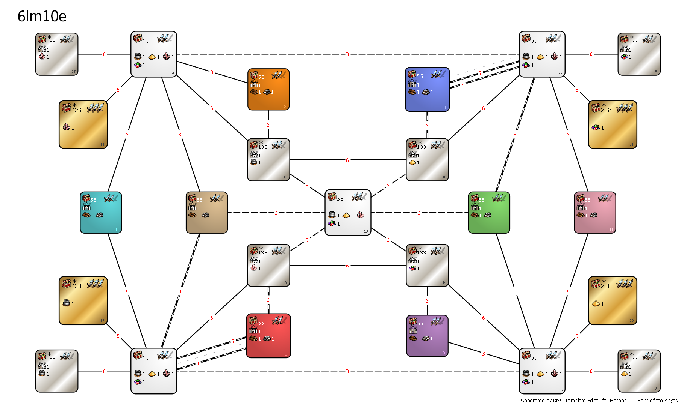
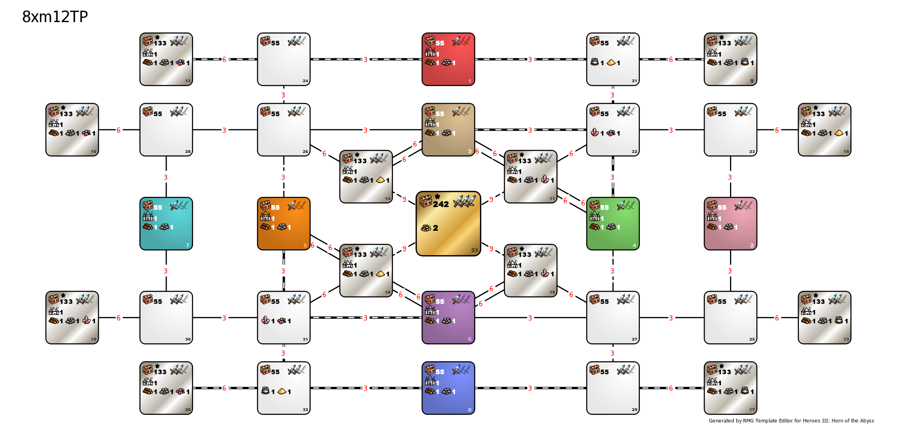
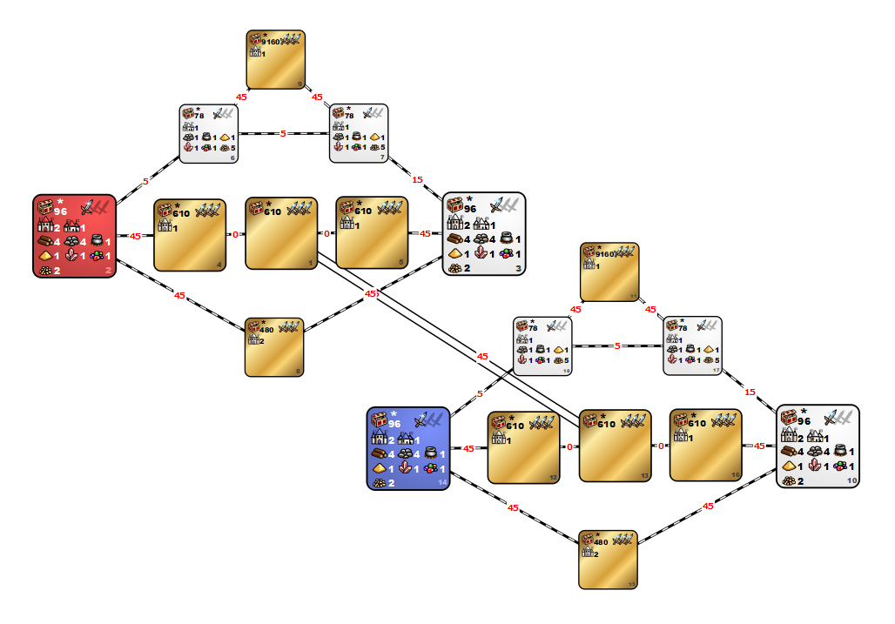

Templates listed here belong to their authors, not owner of this repository.
Alternative versions of default HotA templates
6lm10a
Modifications of 6lm10a go there
8xm12a
Modifications of 8xm12a go there
Duel
Modifications of Duel go there
h3dm1
Modifications of h3dm1 go there
mt_Andromeda
Modifications of mt_Andromeda go there
mt_Firewalk
Modifications of mt_Firewalk go there
Nostalgia
Modifications of Nostalgia go there
Spider
Modifications of Spider go there
Click on template name for short description

This is one of the most popular XL+U templates. Map layout is heavily branched, and therefore there is no distinct centre.
Vast territories are available for players’ exploration, which makes this template quite well-balanced. Both players explore, conduct spell research and usually don’t contact each other, unless one of them does it intentionally.
There is some variety in zones:
- 4 gold zones being the most valuable, but hard to access, because all connections that lead there are imperatively roadless.
- 8 silver zones are second most valuable. There is higher chance for utopias in them, and they usually contains more creature banks (especially Wolf Raiders' Pickets and Dragon Flies' Hives). They are easier to get, because they are always connected to at least one zone.
- White and ai zones are least valueable, but the first ones have resources mines. They are good gold sources for early game. They also has quite good chance for generating a Grffin Conservatory or Experimental Shop.

This is an XL+U template with vast topology and branching road network, where players are considered to explore the territory and research spells.
The template has a rich central treasure zone (with Relic artifacts inside) and several poorer treasure zones.
Zone types:
- 1 gold zone - the most valuable, but hard to acces. All connections leading to it are offroad. Because of hard acces and high value of content which means high value of guards it's mid-/endgame target,
- 12 silver zones - second most valueable. They are easier to get than gold zone and have less guarded, but also good content and one town. There are 3 silver zones for every magical resource,
- AI and white zones - least valueable. They have less value of content than any other zones, but that makes them good gold, Griffin Conservatories and Experimental Shops source for early game.

One of the most popular mirror templates. This template follows a simple gameplan: starting zone > secondary town zone > treasure zone.
Although, early contact is not guaranteed due to complicated map topology, so players are forced to clear the treasure zones and conduct spell research, as on XL+U maps. This template is considered to be among the most balanced ones.
Zone types:
- 12 gold zones - the most valueable. All connections on this template are road connections, so getting to them isn't really hard. It's common practice to, after finding a zone with premium content, steal its content from oponents side of mirror,
- 6 white zones and players zones - less valueable, but you have to claim them anyway, cuz' they lead to gold zones. They have low value content, so they are also good gold source for early game.
 This is a mirror XL+U template, suitable for long and rather contactless games, heavily based on exploration and spell research.
This is a mirror XL+U template, suitable for long and rather contactless games, heavily based on exploration and spell research.
Due to having underground tunnels replaced by fully functional surface layer, this template generates maps effectively bigger than regular XL+U, which is compensated by having obligatory roads for every connection.
Template can be played with or without AI. In case of playing with AIs, AI zones are white zones between silver and white zones.
Zone types:
- 12 silver zones - most valueable, but less valuable than usual. They have more higher tier banks (like Dragon Flies' Hive or Wolf Raiders' Picket) and Utopias are most likely to be found in them. As on h3dm1 its good to, after finding a zone with premium content, steal it from oponents side of mirror.
- 3 inner white zones - they have same valueability as outher white zones, but in case of playing with AI they are AI zones and in both cases they have town with fort. They are good gold and less valueable banks (like Grffin Conservatory or Experimental Shop) source in early game,
- 3 outher white zones - they have same valueability as inner white zones, but they have town without forts. Other diffrence is that the white zone which is dirrectly oposite player starting zone always has Conflux village. They are good gold and less valueable banks (like Grffin Conservatory or Experimental Shop) source in early game,
- Players' zones - they have same valueability as white zones. They also are good gold and less valuable banks source for early game.
This template is focused on highly dynamic game. Player starting zones contain 3 towns and are very rich, but with some custom rules: 2 dwelling of 7th level and 3 dwellings of 6th level, and Pandora’s boxes with experience, are always present; Dragon Utopias and banks which give creatures in reward are forbidden.
The connection to white zone is worth opening soon: there the big piles of gold, banks with gold in reward and a Conflux village can be found.
Besides white zone, there are 3 treasure zones present on the template: “Creature Bank zone”, “Big Sand zone” and “Dragon Utopia zone”.
Zone types:
- 3 central gold zones - so-called sand zone, most valueable, but can't contain banks with army and Dragon Utopias. Middle one leads to oponent side of mirror, so it's obligatory to claim it if you want to attack oponent. It's usually targeted after white gold zones or banks zone,
- Upper gold zone - so-called utopias zone. It contains only 6 Dragon Utopias, one town with fort and some resources. It's usually targeted just before attack on oponent,
- Lower gold zone - so-called banks zone. It contains only 6 Dragon Fly Hives, 6 Wolf Raider Pickets, 4 Griffin Conservatories, 4 Experimental Shops, 4 Red Towers, 2 towns with fort and some resources. Usually targeted after white gold zones or sand zone,
- 2 smaller white zones - so-called gold zones. They contain only resource banks and other resource objects and a lot of mines. Its usually targeted as first.
- Players' starting zones and bigger white zones. Least valueable it contains 2 tier 7 dwellings and 6 tier 3 dwellings, some objects increasing statistics and object other than army banks and utopias and pandoras other than 5000 and 10000 expierience. Second one usually isn't targeted.
This is a non-contact XL+U template with a simple layout, exploration and spell research-based gameplan is expected.
Every player has access to their own half of the map, halves being connected via treasure zones. The treasure zones are valuable, but only the central one may have Relics generated.
Though this template is non-contact, the tempo is compensated by obligatory roads in each connection.
Zone types:
- 1 central gold zone - de iure most valueable zone, it can contain relic class artifactcs and has higher change for Dragon Utopias. It's also fast way to get to oponent. De facto it's not as valueable as it seems. There is no town, so road can be really short which makes most of zone an offroad.
- 9 gold zones - second most valueable zones, they have high chance for Utopias and highier tier army banks. It's main midgame target.
- 6 white zones - least valueable zones, they lead to ai zones and they are only zones, beside central gold zone, that can be accesed from player starting zone, so you have to claim them anyway. They are good gold and lower tier army banks like Griffin Conservatoy or Experimental Shop source for early game.
- Players and Ai starting zones - they are the same as white zones, but instead of towns without fort, they have castles and instead of magic resources mines, they have wood and ore mines.
 This XL+U template is not so rich. The town number here is above usual, connections are poorly guarded. The players are expected to base their gameplan on exploration and spell research. Treasure zones are quite valuable (though they may not contain Relic artifacts), but they are roadless and quite heavily guarded.
This XL+U template is not so rich. The town number here is above usual, connections are poorly guarded. The players are expected to base their gameplan on exploration and spell research. Treasure zones are quite valuable (though they may not contain Relic artifacts), but they are roadless and quite heavily guarded.
Zone types:
- 8 gold zones - most valuable, they have highest chance for Dragon Utopia and high tier banks. They are main target in late early and mid game,
- White zones and players’ starting zones - least valueable, but the first ones have resources mines. They are good gold sources for early game. They also has quite good chance for generating a Grffin Conservatory or Experimental Shop.
1